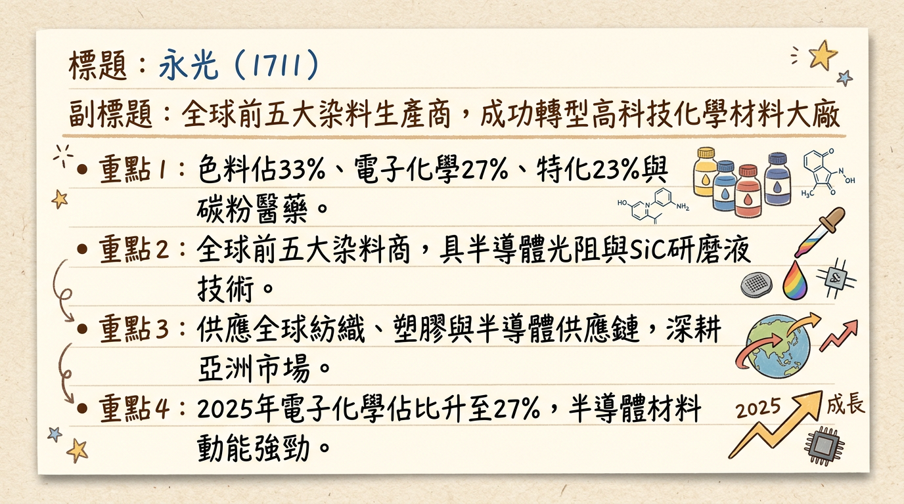
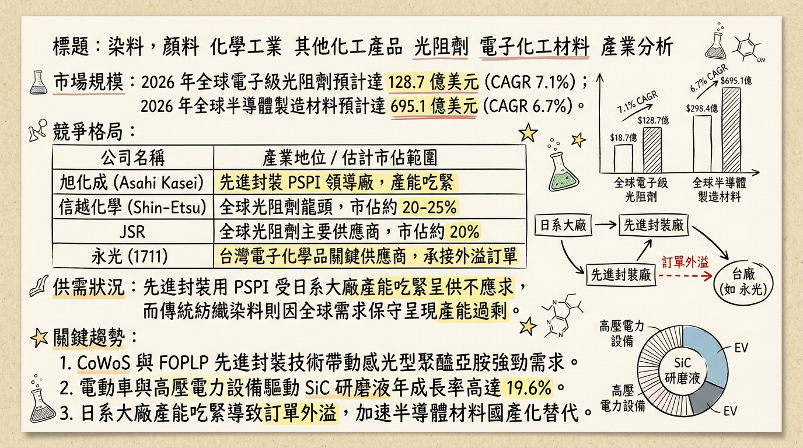
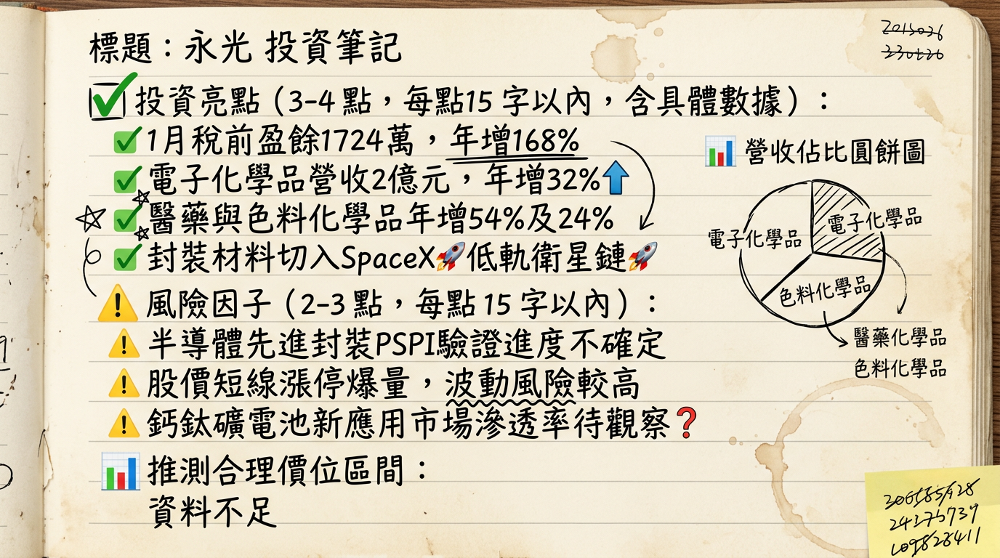

1711 永光 深度研究報告
一句話摘要
永光（1711）正由傳統染料龍頭轉型為半導體材料供應商，2026 年元月獲利轉盈象徵營運谷底已過，後續動能聚焦 PSPI 先進封裝材料驗證與 SiC 研磨液放量。
公司概覽
永光（Everlight Chemical）為亞洲最大、全球前五大染料廠，目前已成功跨足電子化學品、特用化學品及醫藥領域，研發基地主要位於台灣桃園。
2025 年營收結構分析
| 業務別 | 營收佔比 | 核心產品 |
|---|
| 色料化學品 | 33.30% | 活性染料、數位印花墨水 |
| 電子化學品 | 27.25% | 半導體光阻、PSPI、Mini LED 光阻、SiC 研磨液 |
| 特用化學品 | 23.06% | 紫外線吸收劑、光安定劑 |
| 碳粉及其他 | 16.39% | 影印機/雷射印表機碳粉、原料藥 (API) |
核心競爭優勢
材料在地化紅利： 受惠台積電等半導體龍頭推動供應鏈在地化，永光作為本土光阻劑先行者，具備成本與即時服務優勢。
關鍵技術卡位： 感光型聚醯亞胺（PSPI）技術突破日商壟斷，切入 FOPLP（面板級扇出型封裝）與 CoWoS 領域。
產品多元化： 具備跨產業抗風險能力，2026 年新推出的「Eversolar」系列切入低軌衛星與鈣鈦礦太陽能供應鏈。
財務分析
近 6 個月營收趨勢表
| 月份 | 營收金額 (億元) | 月增率 MoM | 年增率 YoY |
|---|
| 2026/01 | 7.24 | +9.70% | +12.74% |
| 2025/12 | 6.60 | +11.85% | -8.91% |
| 2025/11 | 5.90 | +1.06% | -11.17% |
| 2025/10 | 5.84 | -6.27% | -8.98% |
| 2025/09 | 6.23 | +11.09% | -7.71% |
| 2025/08 | 5.61 | -9.70% | -15.80% |
- 2025 全年（自結）： 營收 75.69 億元 (YoY -7.3%)，稅前淨損 1.71 億元，稅前 EPS 約 -0.31 元。
- 2026/01（自結）： 稅前純益 1,724 萬元 (YoY +168%)，營運正式轉虧為盈。
法說會重點
- 電子化學品目標： 預計 2026 年營收佔比將提升至 25-30%。
- 先進封裝布局： PSPI 產品（EverPI P07）目前處於客戶送樣驗證階段，預計 2026 下半年貢獻營收。
- 新產線進度： 擴建的光阻新產線已於 2025 年底完工，2026 年 Q2 起將具備具體產能貢獻。
券商觀點
註：由於 2025 下半年至 2026 年初市場多處於觀望，以下目標價整理自近期市場共識與技術面評比。
| 券商名 | 目標價 | 評等 | 日期 |
|---|
| 市場共識 (法人預估) | 32.0 | 買進/轉機 | 2026/03/02 |
| 技術面參考價 | 29.9 | 中立/觀察 | 2026/03/03 |
| 大型本土券商 (預估) | 28.5 | 持有 | 2025/11/20 |
財報深度分析
近 8 季利潤率趨勢表
| 季度 | 毛利率 (%) | 營業利益率 (%) | 稅後淨利率 (%) |
|---|
| 2025 Q3 | 15.95 | -5.61 | -3.69 |
| 2025 Q2 | 19.68 | -0.98 | -4.13 |
| 2025 Q1 | 22.32 | 1.02 | 1.93 |
| 2024 Q4 | 21.70 | 1.57 | 2.21 |
| 2024 Q3 | 22.04 | 1.73 | 2.29 |
| 2024 Q2 | 23.72 | 5.07 | 5.90 |
| 2024 Q1 | 19.76 | -0.19 | 1.68 |
- 存貨分析： 2025 Q3 存貨週轉天數高達 199.7 天，主因特化與色料庫存調整較慢，電子化學品去化速度相對健康。
- 負債結構： 負債比率 33.88%（2025 Q3），財務結構穩健。
股權異動
- 申報轉讓： 2025 年 5 月董事陳定吉申報贈與轉讓 600 張 予子女，純屬家族資產配置，非市場拋售。
- 股利政策： 2025 年配息 0.3 元。因 2025 全年虧損，預計 2026 年配息空間受限，需觀察 3 月董事會決議。
產業分析
全球光阻劑競爭格局 (2025-2026)
| 排名 | 公司名稱 | 市佔率 (約略) | 優勢領域 |
|---|
| 1 | 日本 JSR | 26% | EUV 先進製程 |
| 2 | 信越化學 | 21% | 矽晶圓整合、高品質化學品 |
| 3 | 東京應化 (TOK) | 20% | 先進封裝、厚膜光阻 |
| 關鍵台廠 | 永光 (1711) | 1-2% | I-line/G-line、PSPI 國產化 |
| 公司 | 全年營收 | 估算 EPS | 關鍵題材 |
|---|
| 永光 (1711) | 75.7 億 | -0.25 | FOPLP、PSPI、SiC 研磨液 |
| 長興 (1717) | 400+ 億 | 1.80 | 全球乾膜光阻龍頭 |
| 新應材 (4749) | 30+ 億 | 7.80 | 2奈米、黃光材料爆發 |
近期催化劑
1. 2026/03 元月獲利年增 168%，確認基本面反轉。
2. PSPI 材料通過台積電或主要封測廠驗證之公告。
3. SiC 研磨液受惠第三代半導體需求成長。
1. 2026 全球貿易關稅政策（川普 2.0 影響）波動。
2. 新產線折舊費用初期對毛利的稀釋。
⭐ 成長動能時間軸
- 2025 Q4： 光阻新產線完工，進入設備調試期。
- 2026 Q1： 「Eversolar」鈣鈦礦膠材量產，切入低軌衛星鏈。
- 2026 Q2： 電子化學品新產能正式放量，預期單月營收年增率維持 20% 以上。
- 2026 Q3： PSPI（感光型聚醯亞胺）預計通過驗證並開始小量貢獻營收。
- 2026 Q4： 傳統色料化學品隨紡織景氣回溫，稼動率重回 80% 以上。
2026 展望
- 成長動能： 電子化學品營收佔比挑戰 30%，帶動整體毛利率重回 23% 以上。
- 風險： 先進材料驗證週期若長於預期、台幣大幅升值造成的匯損風險。
投資結論
營運轉機確立： 元月稅前盈餘轉正，顯示 2025 年的虧損陰霾已過，2026 年有望挑戰 EPS 0.8-1.2 元。
估值修復： 目前股價受先進封裝（FOPLP）題材激勵，PB 比仍處於歷史合理區間中上緣。
觀察指標： 電子化學品單月營收是否站穩 2 億元大關，以及毛利率的季增幅度。
建議目標價區間： 28.5 元 - 33.5 元（基於 2026 年獲利預估與 25x-30x PE）。
本報告由 AI 自動產生，資料來源為公開網路資訊，僅供參考，不構成投資建議。產生時間：2026-03-04 08:06
📊 資訊卡


